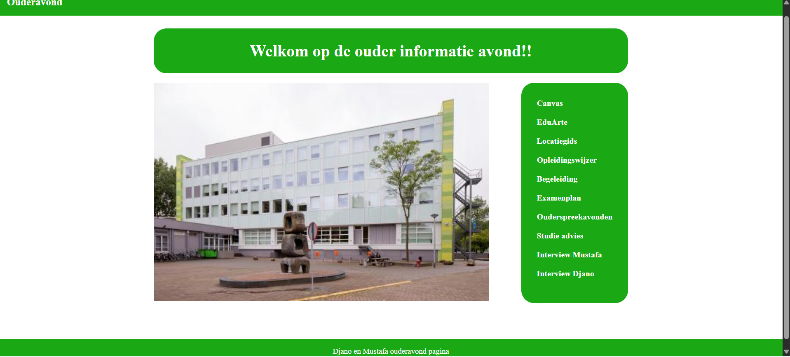

Ouderavond website
Voor dit project gebruikten we: HTML, CSS en Figma. Mustafa en ik hadden allebei geen specifieke rol en deden allebei een helft van de website. De meeste problemen die ik heb opgelost waren in CSS

Goedendoel website
Voor dit project gebruikten we: HTML, CSS en Javascript. Ik werkte samen aan dit project met Bilal en het is het eerste project waarin we onze kennis van javascript hebben gebruikt om een pagina te maken